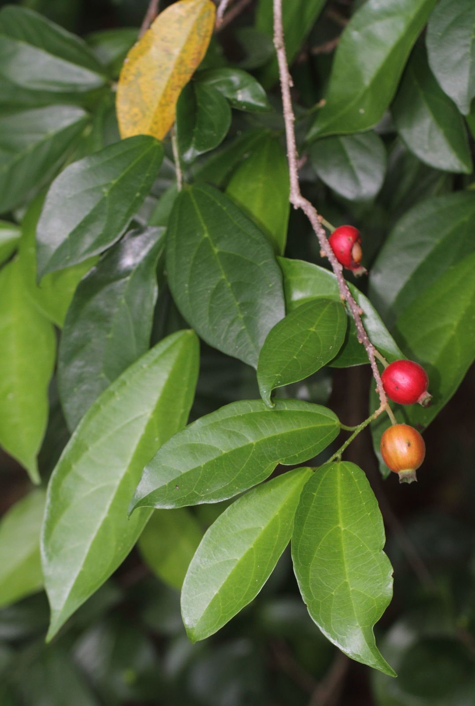

Overview
The plant known as Ankola is also referred to by several other names including Ankota, Dirghkila, and Nikochaka.
Botanical Name
Alangium salvifolium / Alangium lamarckii
Family
Alangiaceae
Regional Names
- Bengali: Aankoda, Bagh, Akarkanta
- Gujarati: Aankola
- Malayalam: Ankola, Irinzil
- Hindi: Ankola, Dhera, Tera, Dhela
- Kannada: Ankole-mare
- Tamil: Alangi, Uduga Chettu
- Telugu: Kudagu, Ankolamu
Classification (Gana)
Acharya Sushruta: Talakot
Bhavprakash and Dhanvantari Nighantu: Guduchyadi Varga
Raja Nighantu: Prabhadradi Gana
Kaiyadeva Nighatu: Aushadhi Varga
External Morphology
5-10 meter small tree
Useful Parts
- Root Bark
- Leaves
- Seed
- Seed Oil
Important Phytoconstituents
- Alangine
- Potassium Chloride
Rasa Panchak
- Rasa: Katu, Kashaya
- Guna: Ushna, Tikshana
- Virya: Ushna
- Vipaka: Katu
Action
Kaphapitta Shaman
Therapeutic Indications
- Krumighna: Anti-helmintic
- Shoolaprashaman: Pain reliever
- Sarpavisha Nashak: Anti-venom for snake poison
- Sothahar: Anti-inflammatory
Therapeutic Uses
- Sarpa Visha and Mushik Visha: Root bark powder (2-2.5 gm) with rice water is used for snake and rat poison.
- Kushtha and Upadamsha: 50-100 mg powder internally and for local application in skin disorders.
- Yakrutodara: 300-350 mg root bark powder as a drastic purgative in inflammatory liver diseases.
Dose
- For vomiting in poison: 3 gm
- For purgation in poison: 500 mg
- Root Bark Powder: 125-375 mg
Formulations
- Ankolabaddha Vati
- Istarthasiddhi Gutika
- Adhrita Ghrita
Adverse Effects
Severe burning sensation, headache, stomach upset, vertigo, unsafe in pregnancy
Remedial Measures
Sankhpuspi (Convolvulus pluricaulis) and sugar boiled in cow milk are antidotes for Ankola’s toxicity effects.
Purification
Not Required